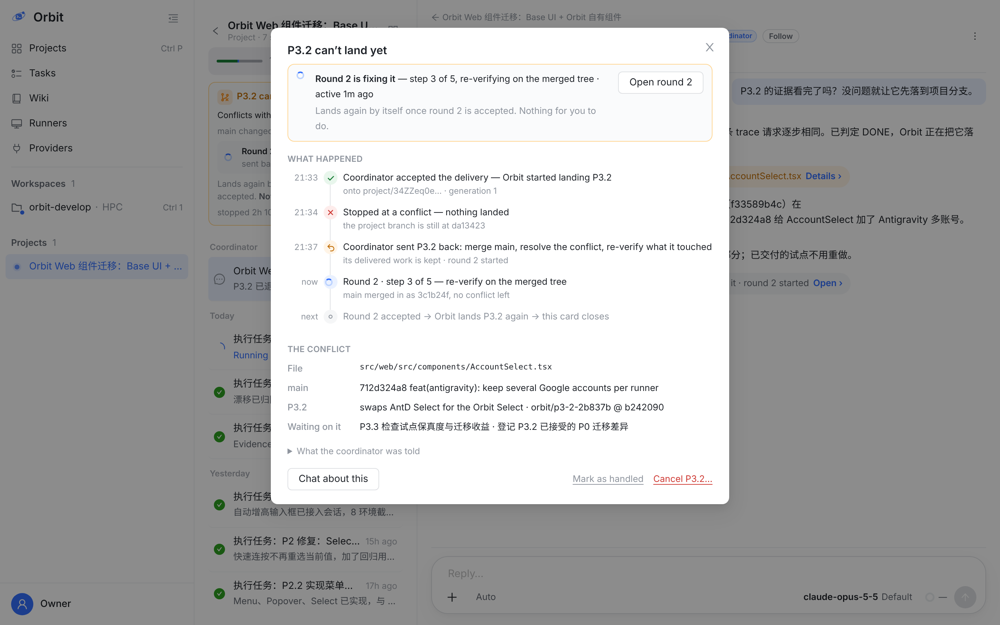
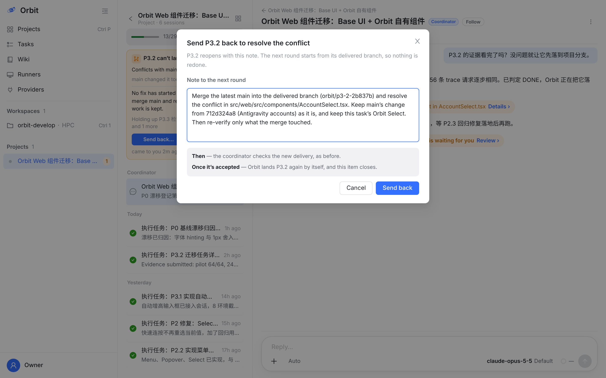

卡片的 Details、协调会话里那一行、任务页 Landing 段，打开的都是同一个 Details，和合入的审阅 sheet 是一个道理。整件事从“接受交付”讲到“下一步”，按时间往下读，谁做了什么都在上面。
Send back… 只在橙色时出现。它就是协调者平时处理冲突的那一步：task_reopen 加说明。说明按冲突事实预先写好，你只需要看一眼、按一下。


按依赖排序。S1–S5 解决“说错话、按错门”，S6–S8 是挪位置，S9 是合入 main 的连贯性。路径指向当前 main（6c6528dbb）。
| 改什么 | 为什么 | 在哪 | |
|---|---|---|---|
| S1 | 升级时钟把“冲突之后 reopen 了原任务、且它的工作会话还活着”算作修复在进行：时钟停住，结束后从最后进展再算 2h。也可以在 reopen 时把任务挂到待办上（handledBy 里出现它）。 | P3.2 这次就是这么被误升级的。退回原任务是协调者处理冲突最常用的一条路（reopen intent 也只在下一次 DONE 才把旧待办标成 handling）。 | open-item-escalation.service.ts escalatesAt；project-integration-job.ts reopen intent |
| S2 | 待办行带上 fix：怎么修的（REOPEN / REPAIR_TASK / RERUN）、哪个任务和会话、第几轮、进度（current / total / phase）、最后活跃时间。 | 卡片的状态行和 Details 的时间线都从这里画。进度已经有了（task_progress_report），只是没接到待办上。 | project-open-item.service.ts list()；project-progress.ts ProjectOpenItemRow |
| S3 | Send back… 调冲突的 RETRY 门（task_comment ＋ task_reopen，说明预填），不再调 POST /tasks/:id/execute。 | 服务端门表里，冲突的 RETRY 本来就是 task_reopen / task_create。Web 的 Retry 却调 Run Now：不会重新落地，也不关待办。 | open-item-doors.ts；ProjectProgressStatus.tsx ItemPress |
| S4 | 冲突不画 Retry。Cancel 收进 ⋯，修复在跑时先确认“会一起取消第 2 轮”。Open task session 指向正在修的那一轮。 | 现在 6 个按钮里有两个会伤到正在进行的修复，一个打开已经结束的会话。 | ProjectProgressStatus.tsx CardActions / actionHref |
| S5 | 删掉 “After a fix: push to the task branch — Orbit re-integrates…”。要么实现 J-T1c（新推送自动重排落地），要么不写。建议先删。 | 代码里没有这条路：LAND_TASK 只在任务 DONE 时排队。 | ProjectProgressStatus.tsx:1016；合约 §J-T1c |
| S6 | 项目会话页画落地卡：读 integration.landTasks（已经返回停在冲突、检查失败的任务）加 open-items。顺序是合入卡 → 要你 → 修复中 → 在看，最多 3 张。 | 现在进度卡只画进行中的作业，落地一停这一页就什么都不说了。 | WorkspaceView.tsx SessionProjectLanding；iOS SessionProjectPage |
| S7 | 协调会话：投递卡、升级卡都换成每个时刻一行（ReviewCard 的 preview，和合入一样），点开是 Details。 | 大卡夹在对话里，会把上下文顶开；同一件事出现两张卡，说法还不一样。 | OpenItemDeliveryCard.tsx；exceptionCardRows；OpenItemDelivery.swift |
| S8 | 推送、横幅、会话列表的 Needs you 都打开项目会话页，文案用卡片标题。 | 和合入请求在 iOS 上的处理一致：提醒只负责带你去卡那里。 | owner-item-alert.ts；Notifications.swift |
| S9 | 合入 main 的冲突：修复通过检查后，你之前按的 Merge to main 继续生效，自动合入。修复改到冲突文件以外时才重新问你。 | 这就是“和触发合入的那一下连起来”：你已经同意过的事，不用因为一次冲突再同意一遍。 | promotion 状态机（CONFIRMED → BLOCKED → 重查 → 合入） |
不在这一期的：检查失败（INTEGRATION_CHECK_FAILED）、集成错误也用同一张卡、同一套规则，只是原因行和修法不同。这一期按你的要求只改冲突。